[N-World Contents] [Book Contents] [Prev] [Next] [Index]
Reinstance, Copy, & Multiply
This chapter describes the difference between three techniques that can be used to "duplicate" an object in N-Geometry: Reinstance, Copy, and Multiply. You'll also learn how to create various types of lattices using the Multiply command.
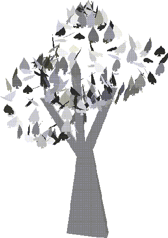
New Techniques in this Chapter
This chapter describes the difference between several commands that are used to "duplicate" objects in N-Geometry:
Each of these techniques can be used in different contexts in N-Geometry.
Reinstanced Objects
When you reinstance an object, N-Geometry creates a new object that shares the body of the original polyhedron. Any change made to the body is shared by any reinstance that shares that body.
Try this:
1. (CLICK-L) on GeoMenus>File>New Object>Cube.
- A cube appears in the N-Geometry window.
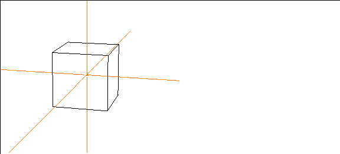
Figure 17.1 A default cube
2. (CLICK-R) on Copy.
- A menu of copy options appears.
3. (CLICK-L) on Reinstance>Cube.
- Nothing appears to happen; however, you have reinstanced the cube. The reinstance is currently in the same position as the original.
4. (CLICK-L) on objects in the elements sensitivity menu.
5. (SHIFT-L) on the reinstanced cube, then (CLICK-L) on Axis Move>X.
- Remember that the name of the selected object appears in the upper left corner of the N-Geometry window. Move the reinstanced cube along the positive X axis (to the right).
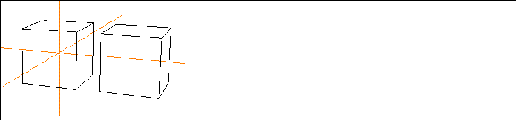
Figure 17.2 A reinstanced cube
6. (CLICK-L) on points on the element sensitivity menu.
7. then (SHIFT-L) on a corner of the original cube, then (CLICK-L) on Move.
- As you move the mouse around, the vertex on the original and the corresponding vertex on the reinstanced cube move in unison (with relation to their local space).
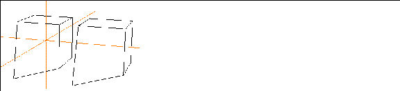
Figure 17.3 Reinstanced objects inherit modifications performed on the original
- Now try the same thing, this time choosing a vertex on the reinstanced object-the original object is updated as well. Again, this is because reinstanced objects share the same body.
- Note. Any modification that you perform on the body of a reinstanced object affects all other reinstances of that object.
- Note. Reinstancing objects takes considerably less memory than copying; you may want to consider this when working with very complex objects.
Copied Objects
When you copy an object, you create a single discrete new object in the same location as the original. The duplicate is named "Copy of Object" where "Object" is the name of the original.
Try this:
1. (CLICK-L) on GeoMenus>File>New Object>Cube.
- A cube appears in the N-Geometry window:
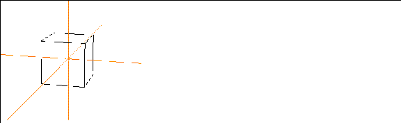
Figure 17.4 A cube
2. (SHIFT-L) on objects on the element sensitivity menu.
3. (SHIFT-L) on the cube, then (CLICK-L) on Copy.
- Nothing appears to happen; however, you have copied the cube. The copy is currently in the same position as the original.
4. (SHIFT-L) on the cube, then (CLICK-L) on Axis Move>X.
- Move the copy of the original cube along the positive X axis (to the right).
Figure 17.5 A copied cube
5. (CLICK-L) on points on the element sensitivity menu.
6. (SHIFT-L) on a corner of the copied cube, then (CLICK-L) on Move.
- As you move the mouse around, the vertex on the copy moves; however, the original is unaffected:
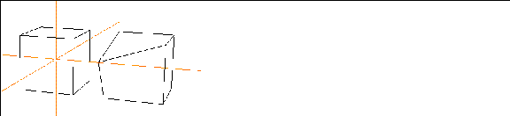
Figure 17.6 Copied objects have completely unique bodies and bdi's
- Now try the same thing, this time choosing a vertex on the original object-the copy is unaffected. This is because copied objects are completely discrete-that is, they have individual bodies, as if they were both created from scratch.
Multiplied Objects
Finally, you can create multiple copies or instances of an object, in various patterns, using the Multiply command.
Try this:
1. Create a simple object, such as a cube.
Figure 17.7 A cube
2. (CLICK-R) on Copy.
- A menu of copy options appears.
3. (CLICK-L) on Multiply>Cube.
- The Choose Multiple Copy Parameters dialog box appears. By specifying different parameters in the dialog box, you can create different patterns of either copied or reinstanced versions of a selected object.
Making a Linear Lattice of Objects
A linear lattice extends in one dimension, along the X plane. You specify how many copies of the object should be made and how much space should be between the new objects.
To create a sample linear lattice of objects, try the following:
4. (CLICK-L) on Object to Multiply, then (CLICK-L) on Cube.
5. (CLICK-L) on Duplicate How.
- Duplicates can be either copied or reinstanced versions of the object specified. There are three options:
6. Arrangement Mode specifies the pattern for the lattice of generated duplicates.
- There are five options for Arrangement Mode:
- These options are described in more detail in the N-Geometry Reference Guide.
- For now, (CLICK-L) on Linear.
7. For Number of Copies, enter 4.
8. For Spacing Mode, use Abutting.
- You can specify an amount of distance between each object, or space duplicates from center to center. These options are described in more detail in the N-Geometry Reference Guide.
9. Set Interobject Dist to 5.
10. Set Randomize to No.
11. (CLICK-L) on Make Multiple Copies.
- You should get a row of cubes that looks something like this:
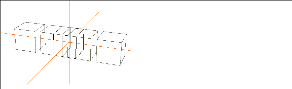
Figure 17.8 Insensitive multiplied lattice of cubes (linear), with original still visible
- The reinstanced versions of the cube appear in the N-Geometry window, but are insensitive.
12. (CLICK-L) on GeoMenus>Object Display>Sensitivity to see a list of objects.
13. (CLICK-R) on "Copy of Cube 4x Row".
- If you multiplied a different object, select the appropriate lattice. N-Geometry groups the objects in a structured object, rather than putting everything at the top level:
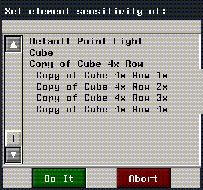
Figure 17.9 Object structure of multiplied object
14. (CLICK-L) on GeoMenus>Object Display>Visibility>Cube to make the original invisible.
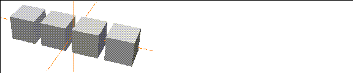
Figure 17.10 Multiplied lattice of cubes (linear)
Making a Planar Lattice of Objects
A planar lattice extends in two dimensions, like a grid, along the X and Y planes. You specify how many copies of the object should be made along each axis and how much space should be between the new objects along each axis.
To create a sample planar lattice of objects, use the following parameters:
These options are described in more detail in the N-Geometry Reference Guide.
(CLICK-L) on Make Multiple Copies to create a plane of objects:
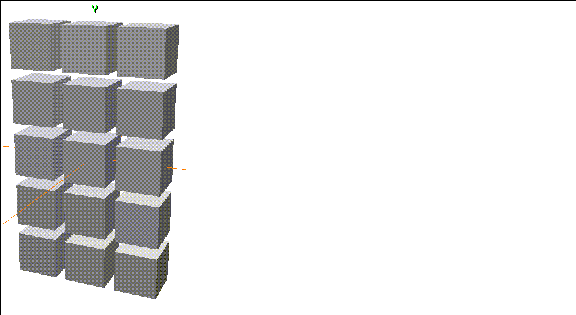
Figure 17.11 Multiplied lattice of cubes (planar)
Making a Cubical Lattice of Objects
A cubical lattice extends in three dimensions, along the X, Y, and Z planes. You specify how many copies of the object should be made along each axis and how much space should be between the new objects along each axis.
To create a sample cubical lattice of objects, use the following parameters:
These options are described in more detail in the N-Geometry Reference Guide.
(CLICK-L) on Make Multiple Copies to create the lattice:
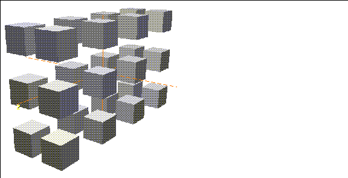
Figure 17.12 Multiplied lattice of cubes (cubical)
Making a Helical Lattice of Objects
A helical lattice looks like a spring. When creating a helical lattice, you specify a radius (how tight the spring is) and a pitch (how stretched the spring appears). The specified object is then copied along the resulting "spring."
To create a sample helical lattice of objects, use the following parameters:
These options are described in more detail in the N-Geometry Reference Guide.
(CLICK-L) on Make Multiple Copies to create a helical lattice of objects:
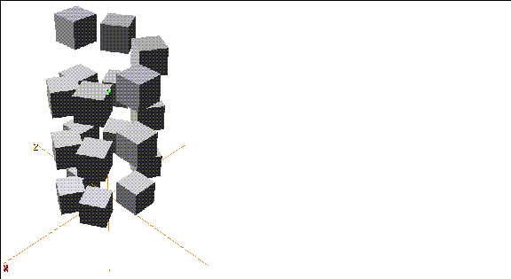
Figure 17.13 Multiplied lattice of cubes (helical)
Turning on shading for the objects makes the "helix" effect more apparent.
Randomizing a Generated Lattice
You can randomize the characteristics used to generate a lattice, giving it a more "natural" look and feel. You can randomize the following parameters:
These options are described in more detail in the N-Geometry Reference Guide.
To create a sample cubical lattice of objects, using some of the random characteristics, use the following parameters:
These options are described in more detail in the N-Geometry Reference Guide.
(CLICK-L) on Make Multiple Copies to create a randomized planar lattice of objects:
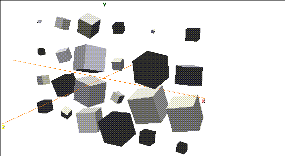
Figure 17.14 Randomized lattice of cubes (planar)
The results that you can achieve using the Randomize feature of Multiply are almost limitless. As with all features of N-Geometry, feel free to experiment, changing parameters a little each time to create unique effects.
Using the "Previous" Button
If you are experimenting with the Multiply operation, you'll want to make use of the Previous button in the Choose Multiple Copy Parameters dialog box.
(CLICK-L) on the Previous button to bring up the parameters used by the last Multiply command. You can then change one or two parameters and make a new lattice of objects.
Making a Per Point Lattice
One final option when using the Multiply command is to create a per-point lattice.
A per point lattice makes copies of one object and positions those copies on some or all of the points on a second object. Using different parameters available with the Multiply command, you can fine tune how those objects are placed on the target object.
To create a per-point lattice, you need to do three things:
Follow the steps below to create a simple tree that will use a per-point lattice to create a random distribution of leaves.
Creating the Tree Trunk
1. (CLICK-L) on GeoMenus>File>New Object>Lamina.
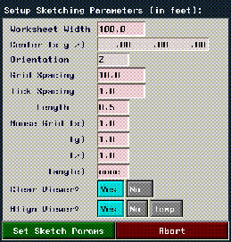
Figure 17.15 Sketch parameters
- Each of the parameters on this menu is described in detail in the N-Geometry Reference Guide.
- For now, change only the following parameters:
2. (CLICK-L) on the Set Sketch Params button.
- Create a lamina that looks something like this for your tree trunk:
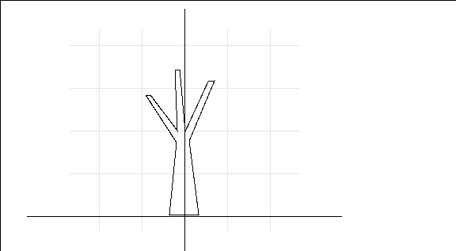
Figure 17.16 Sketched trunk
3. (CLICK-R) when you're done sketching the wire, then (CLICK-L) on OK.
- The lamina appears in the N-Geometry window:
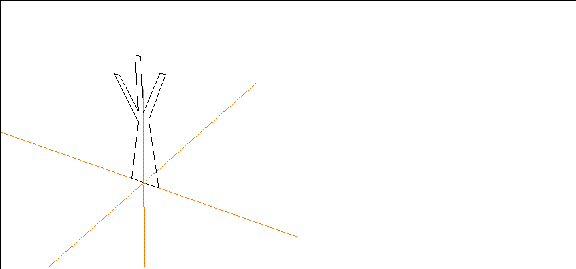
Figure 17.17 Generated lamina for the tree trunk
4. Select one of the faces on the lamina and extrude it slightly.
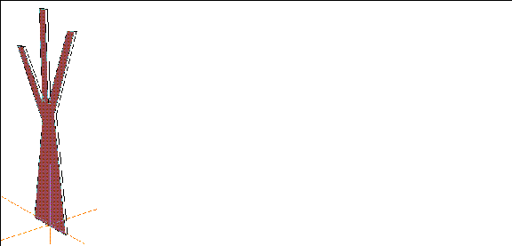
Figure 17.18 Extrude the lamina
5. Move the camera so that you're looking at the bottom of the tree.
- If you started your lamina from the center of the sketch editor, the bottom of your extruded tree will have two faces:
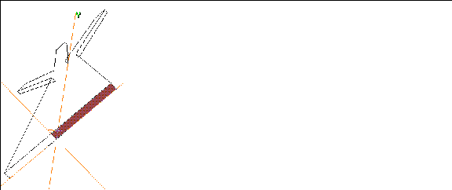
Figure 17.19 The bottom of the tree may have more than one face
6. Collect the faces on the bottom of the tree.
7. (SHIFT-L) on the collection, then (CLICK-L) on Merge Region.
- The faces are merged together.
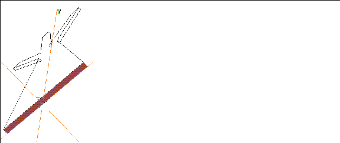
Figure 17.20 Merge the faces on the bottom of the tree
- Now, even though you've merged the bottom faces into one face, we still need to use the Dissolve command to get rid of the extra segments on the bottom face.
8. (SHIFT-L) on a segment like the one shown in Figure 17.21, then (CLICK-L) on Dissolve.
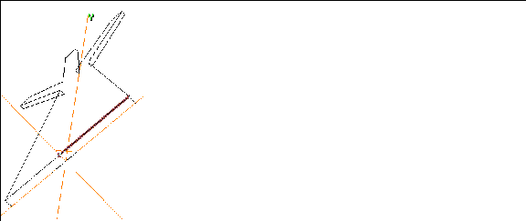
Figure 17.21 Dissolve extra segments
- The segment is dissolved, leaving one segment along the length of the merged region (the new face):
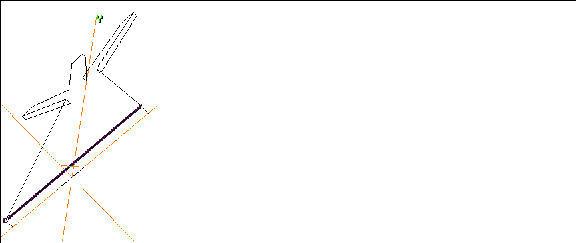
Figure 17.22 After dissolving the extra segment
9. Dissolve the similar segment on the other side of the base.
10. (CLICK-L) on one of the segments at the base, then (CLICK-M) on Axis Move>Z.
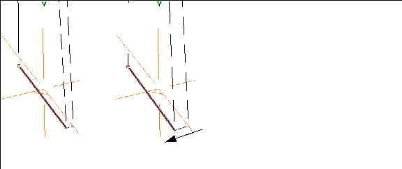
Figure 17.23 Giving the tree some depth
11. Axis Move the corresponding segment on the other side of the tree base.
- When you're done, you should have a tree trunk that looks something like this:
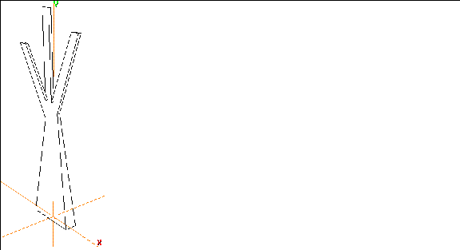
Figure 17.24 Finished tree trunk
Creating the Bounding Object
This part is simple; think of the bounding object as a volume along whose vertices you want the multiplied copies of the object to appear.
12. (CLICK-L) on GeoMenus>File>New Object.
13. (CLICK-R) on Sphere.
- Change the following parameters on the menu that appears:
Figure 17.25 Sphere parameters
14. (CLICK-L) on the Make Sphere button.
- This creates a sphere divided eight times horizontally and vertically:
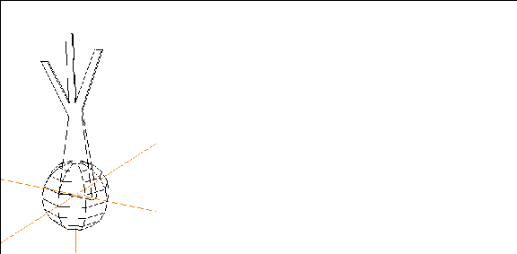
Figure 17.26 Sphere
15. (SHIFT-L) on the Sphere, then (CLICK-L) on Move.
- Move the sphere so that it's centered around the end of one of the branches.
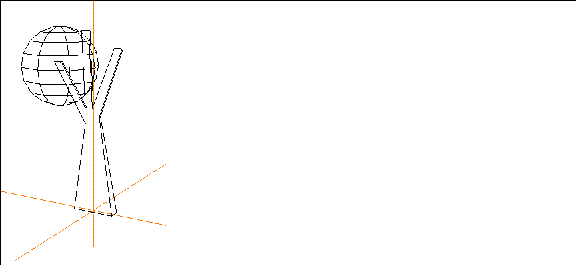
Figure 17.27 Moved sphere
In this case, the sphere defines the basic area in which leaves will be multiplied. You can scale modify the topology of the object if you want to create a more irregular shape for the distribution of the leaves, or change the number of points on the bounding object.
Creating the Object to be Multiplied
Now we need to create the leaf. Use GeoMenus>File>New Object>Lamina, make a leaf-shaped lamina. Don't worry about the scale of the leaf; we'll modify that appropriately when we return to the N-Geometry window.
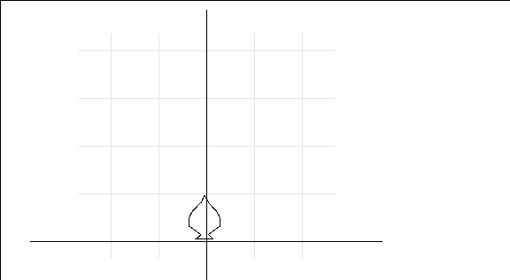
Figure 17.28 Create a leaf-shaped lamina
If you use any bezier wires (curved segments) in creating the lamina, the following menu appears:
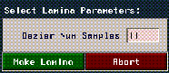
Figure 17.29 Bezier samples for generated lamina
Use the default number of segments (11) and (CLICK-L) on Make Lamina.
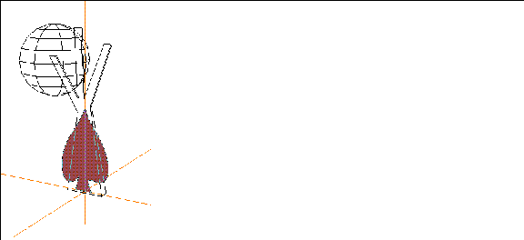
Figure 17.30 The generated leaf
16. If you need to, (SHIFT-L) on the leaf, then (CLICK-L) on Scale to scale it to the appropriate size:
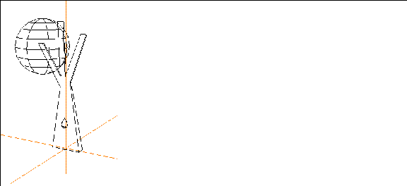
Figure 17.31 Scaled leaf
17. (SHIFT-L) on the leaf, then (CLICK-R) on Position>Origin.
- This puts the leaf at the global center.
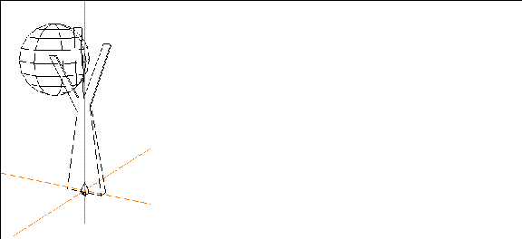
Figure 17.32 Repositioned leaf
You're now ready to make your lattice.
Making the Lattice
18. (CLICK-R) on GeoMenus>Copy.
19. (CLICK-L) on Multiply.
- Enter the following parameters:
- After you've selected these parameters, (CLICK-L) on the Make Multiple Copies button.
- Reinstanced copies of leaves appear at each point on the sphere, with their normals aligned randomly:
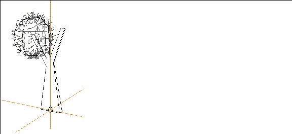
Figure 17.33 Reinstanced leaf
The reinstanced leaves are structured under a top level object. If your objects were called "leaf" and "sphere," the generated top level object is called "leafs on sphere."
20. Make the sphere invisible.
21. Turn Shading on for both the new lattice and the trunk.
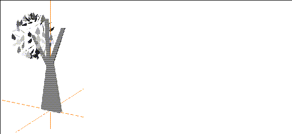
Figure 17.34 Shaded tree
You can create new bounding objects, using normal or magnet moves to create free-form shapes. Just remember that an object is generated at each point along the bounding object.
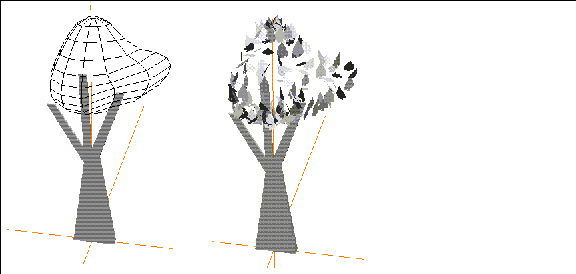
Figure 17.35 New bounding object, and generated lattice
Aligning Objects on Points of the Bounding Object
In the example above, used a random alignment of leaves on the points of the bounding object; there are several options for aligning the multiplied object on the bounding object:
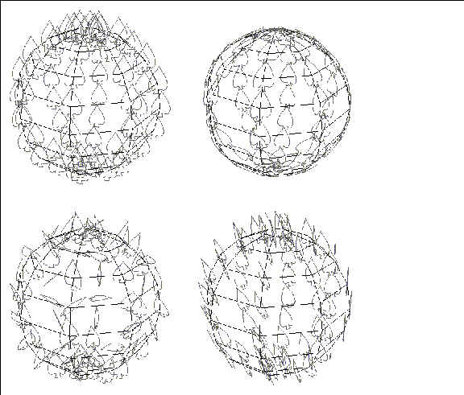
Figure 17.36 Alignment options (No, Normals, Random, Radial)
Using Randomize with Per Point
You can use the Randomize feature of the Multiply command to distribute the reinstanced or copied objects around the points of the bounding object.
Combining Subobjects
If you are working with a game platform, and you want to make all the subobjects into one single top level object:
22. Collect all the leaves (or objects) that you want to combine.
- You might, for example, make all the objects in the scene invisible except for those you want to combine, then use the 3D lasso to collect the objects.
- Note. Objects created with the Multiply command are added to the scene with their sensitivity turned off (gray). You must make an object sensitive to select it through the N-Geometry window. Refer to the N-Geometry Reference Guide for directions on toggling the sensitivity of an object.
23. (SHIFT-L) on the collection, then (CLICK-L) on combine.
24. Give the new object a name when prompted, then (CLICK-L) on the Rename button.
- Note. If you combine many subobjects into a single top-level object, then delete the subobjects, you should see better response when moving the camera in the N-Geometry window. This is because there are fewer objects for N-Geometry to keep track of during the move.
Save your Work
Make sure to use the GeoMenus>File>Save operation to save your work.
Congratulations!
You've now learned:
[N-World Contents] [Book Contents] [Prev] [Next] [Index]
 Another fine product from Nichimen documentation!
Another fine product from Nichimen documentation!
Copyright © 1996, Nichimen Graphics Corporation. All rights
reserved.